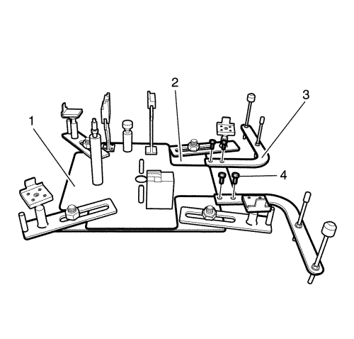
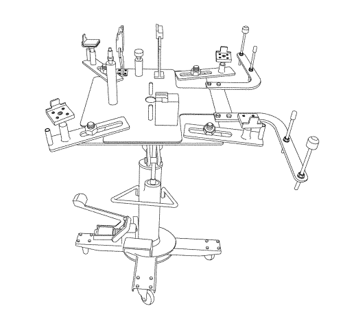
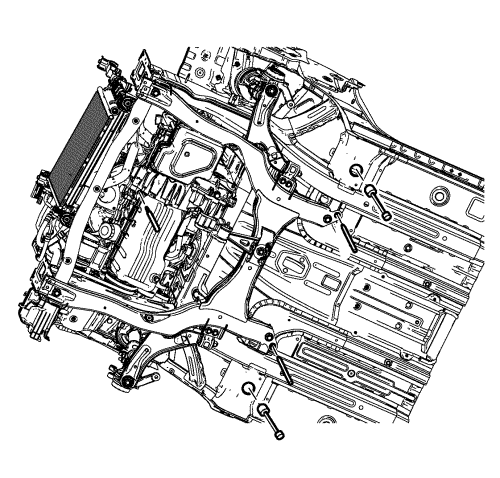
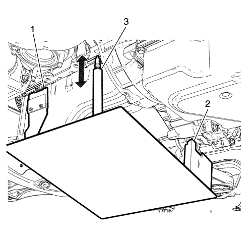
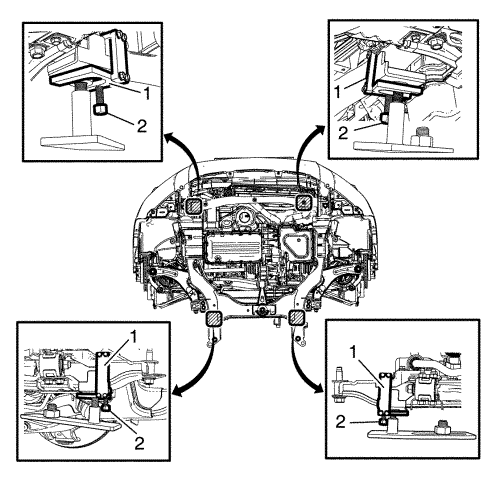

Soporte del motor/cambio — con EN-49802 y EN-50176
Herramientas especiales
| • | EN-50176 Plataforma de soporte del tren motor |
| • | EN-50177 Retención del apoyo del soporte |
| • | EN-49802 Soporte de la base |
| • | EN-48244 Soporte del palet de instalación/desmontaje del conjunto del motor |
Si desea informarse sobre herramientas regionales equivalentes, consultar Herramientas especiales .
Prepare el EN-50176 y el EN-49802 para el Montaje del motor/transmisión

- Monte el adaptador (3) en el apoyo del soporte EN-49802 (2).
- Introduzca los pernos (4).
- Monte la plataforma de soporte del tren motor EN-50176 (1) al apoyo del soporte EN-49802 (2).

- Sostenga la plataforma de soporte del tren motor EN-50176 y el apoyo del soporte EN-49802 con un gato.
- Para asegurarlo, monte los pernos y las tuercas en un orificio entre la plataforma de soporte EN-50176, el apoyo del soporte EN-49802 y un gato.
Procedimiento de montaje
- Levante el vehículo a la altura máxima. Consultar Elevación del vehículo con un gato .
- Desmonte el aislante del compartimento delantero. Consultar Sustitución de la cubierta inferior de abertura del panel del parachoques delantero .

- Coloque la plataforma de soporte del tren motor EN-50176, el apoyo del soporte EN-49802 con un gato, bajo el tren motor.
Nota: Asegúrese de que los 4 pasadores están fijos en los orificios del soporte y el bastidor de la carrocería.
- Observar los 5 puntos como se indica, eleve la plataforma del soporte del tren motor EN-50176, el apoyo del soporte EN-49802 con un gato.

Nota: Asegúrese de que las 3 posiciones (1, 2, 3) de la plataforma de soporte del tren motor EN-50176 están asentadas contra el tren motor.
- Eleve la plataforma del soporte del tren motor EN-50176 con un gato, hasta que los puntos (1) y (2) asienten firmemente en la base del bloque del motor y la transmisión.
- Gire el apoyo (3) hacia arriba hasta que asiente firmemente en el orificio delantero del motor.

Nota: Asegúrese de que los 4 brazos de apoyo del soporte asientan firmemente en el soporte.
- Coloque los 4 brazos de apoyo del soporte del apoyo del soporte EN-49802 en el punto indicado.
- Gire el apoyo hacia arriba hasta que asiente firmemente en el soporte.
- Monte la retención del apoyo del soporte EN-50177 (1).
- Apriete los pernos (2).
- Baje el gato y desmóntelo.
Procedimiento de desmontaje
- Sostenga la plataforma de soporte del tren motor EN-50176, el apoyo del soporte EN-49802 con un gato.
- Para asegurarlo, monte los pernos y las tuercas en un orificio entre la plataforma de soporte del tren motor EN-50176, el apoyo del soporte EN-49802 y un gato.
- Desmonte la retención del apoyo del soporte EN-50177 (1).
- Baje un gato y desmonte la plataforma de soporte del tren motor EN-50176 (1) y el apoyo del soporte EN-49802 (2).
| © Copyright Chevrolet Europe. All rights reserved |